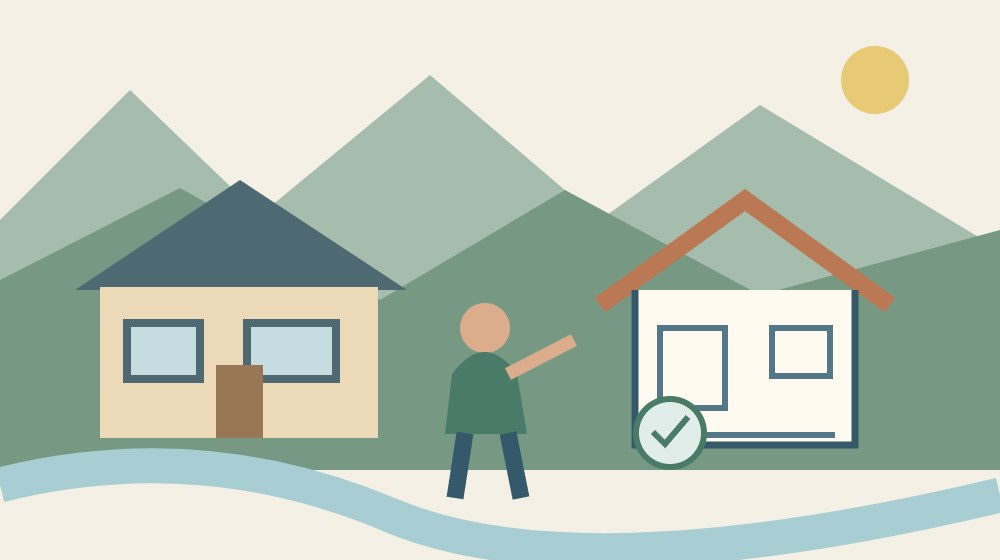
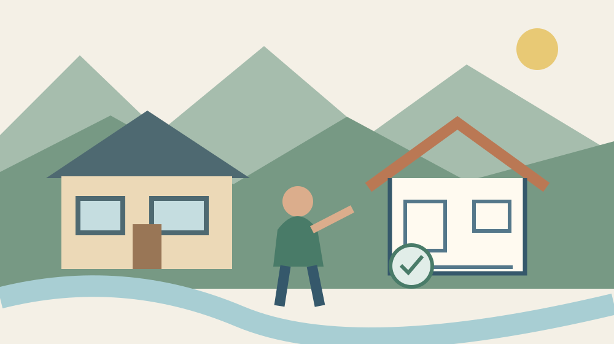
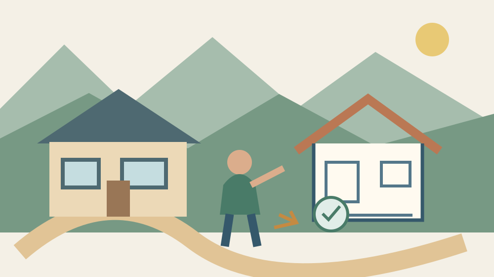

森町の実家売却｜建物状況調査で分かる範囲
（火曜日）

Q. 実家を売る前に建物状況調査をすれば、家の問題は全部分かりますか？
全部は分かりません。建物状況調査は、専門の建築士が構造耐力上主要な部分と雨水の浸入を防止する部分を目視・計測等で調べます。瑕疵の有無を判定するものではなく、調査できない箇所もあります。2024年4月の約款改正でも限界が明記されました。今日は実家の修繕記録を一つ探し、調査者へ伝える準備をしてください。
手入れを続けた実家の記録を、次の判断に生かす
森町の実家を建物付きで売ろうと考える家族には、これまで直してきた場所や、気になりながら見守ってきた部分があります。雨樋を直す手配、屋根を見てもらう連絡、帰省のたびの換気。家が残っている背景には、費用だけでは測れない家族の手間があります。
大石浩之（磐田市／不動産業）です。この記事では、2026年9月22日に国土交通省の資料を確認し、建物状況調査で分かる範囲を整理します。調査を受ければ高く売れると約束する話ではありません。手入れの記録と専門家の調査をつなぎ、売却を判断する材料を増やすための話です。
古い家について「大丈夫ですか」と聞くとき、その言葉には屋根の雨漏り、柱や基礎、設備、今後の修繕費など複数の心配が入っています。一回の調査で全部が同じ深さまで分かると考えると、結果を受け取った後に期待とのずれが残ります。頼む前に知りたいことを分けます。
売却準備全体では、建物の調査だけでなく名義や道路の確認も残ります。価格を聞く前に確認したい境界・接道・名義と役割を分けて読むと、家そのものの調査が何を受け持つか見えやすくなります。建物の結果で土地の条件まで判断しないでください。
調査対象は、構造を支える部分と雨水を防ぐ部分
国土交通省の「建物状況調査（インスペクション）活用の手引き」は、調査対象を構造耐力上主要な部分と、雨水の浸入を防止する部分としています。日常の言葉に直すと、建物を支える部分と、雨を内部へ入れないための部分です。室内の見栄えだけを評価する調査ではありません。
手引きには、構造に関わる部分として基礎、壁、柱、土台などが、雨水に関わる部分として屋根や外壁、開口部の建具などが挙げられています。実家のどこが対象かを尋ねるときは、部屋の名前だけでなく、気になっている部位を写真や図面の位置と結び付けて伝えます。
調査を行うのは、国の登録を受けた機関の講習を修了した建築士である既存住宅状況調査技術者です。手引きは、目視や計測、非破壊検査を行うと説明しています。壁の内部まで全部壊して確かめる精密な調査を、当然に含むと受け取らないようにしてください。
手引きには、調査できない箇所がある場合は省略できるとの注記もあります。調査済みという一言でも、現地の条件で見られなかった範囲が残り得る点は、意外に感じるかもしれません。結果を読むときには、劣化の有無だけでなく、調べた場所と調べられなかった場所を確かめます。

2024年4月の改正は、調査の限界も書面に残す
国土交通省は、2024年4月1日から標準媒介契約約款の建物状況調査に関する記載を改めたと説明しています。調査者のあっせんを「無」とする場合の理由欄を設け、瑕疵の有無を判定するものではないことなど、調査の限界を明記したという内容です。
あっせんは、ここでは調査を実施する人を紹介・手配につなぐことです。仲介を頼む不動産業者と、建物を専門的に調査する人は役割が異なります。媒介契約の欄を見るときは、誰が調査する予定なのか、紹介がないならなぜなのかを言葉で確認する入口にできます。
瑕疵という言葉は、一般には欠陥や不具合を指します。約款の限界についての説明は、調査結果を「家に問題がない証明」と誤解しないためのものです。売買契約上の責任まで結果だけで決めず、個別の契約条件や告知の扱いは仲介業者や法律の専門家へ確認してください。
私は、書面に限界が明記されることを、調査の価値が低いという意味には受け取りません。できることを正確に分けるから、できない部分について別の質問ができます。どこまで分かったかを共有できる調査の方が、漠然と安心するだけの説明より、家族の次の判断につながると考えます。
見られなかった場所を「異常なし」に置き換えない
建物状況調査の結果を受け取る際は、調査不能や未確認の範囲を独立して読みます。気になる箇所が報告書に見当たらないなら、確認して異常がなかったのか、対象外なのか、見られなかったのかを質問します。空欄の意味を持ち主側で決めない方法です。
例えば家具の裏や点検のための入口について不安がある場合は、事前にその状態を調査者へ伝えます。家族が無理に家具を移したり、床下や小屋裏へ入ったりする準備を先に決めないでください。必要な条件を聞いてから、安全に整えられる範囲を調整します。
過去に雨染みがあった場所は、今その場で乾いていても、家族が知っている発見時期と修繕の記録を伝えます。「雨が強い日に気付いた」「修理後の様子は未確認」など、覚えていることと記録にあることを分けます。原因を自分で断定する必要はありません。
家の暮らしやすさを考える下見には、調査とは別の役割もあります。八月の午後に実家を下見する視点では、訪れる条件を意識しています。温熱感覚や生活上の使い勝手と、専門家が対象部位を調べる結果を、一つの評価へ混ぜないでください。
良い点｜家の状態を、売主と買主の共通の材料にできる
建物状況調査は、専門家が確認した建物の状態を、売却の検討に使える資料へ変える入口です。家族の記憶だけで「ずっと大丈夫だった」と伝える場合より、調査した日時・部位・結果を示せます。誰がどこを確認したか分かること自体が、次の質問を具体的にします。
私は、長く手入れしてきた家を、築年数だけでひとまとめにして判断したくありません。修繕記録と調査結果を並べれば、直した場所、残っている課題、分からない部分を分けられます。維持してきた家族の努力を、思い出だけでなく引き継げる情報として扱える点に意味を感じます。
劣化が見つかった場合も、直して売るか、状態を説明して売るか、判断を保留するかを話す材料になります。私は、結果が良いか悪いかの二択で終わらせず、その内容が費用と段取りへどうつながるかを業者に質問する使い方を勧めます。調査は価格の保証とは役割が違います。
建物を残す可能性を考える人にとっては、解体へ話を進める前の材料にもなり得ます。ただし、調査を受けたから保存するべきだと結論付けるものではありません。維持費、今後の利用者、家族の移動を含めて、続けられる条件があるかを考える順序です。
注文したい点｜調査、修繕見積り、保証を一つにしない
建物状況調査を依頼する際は、結果の報告と、修繕方法の提案や工事見積りが同じ契約に含まれるかを確認します。調べた結果が出れば、必要な工事費も自動的に全て分かるとは限りません。追加の検討が必要なら、誰に何を依頼するのかを別に尋ねます。
私は「調査済みだから安心」という短い説明だけを広告や家族の会話で使うことには慎重です。調査日、範囲、未確認箇所が抜けると、買う人と売る人の理解が違ってしまいます。安心という言葉を足す前に、報告書のどの結果を説明しているかを示してほしいと思います。
建物状況調査と既存住宅売買瑕疵保険も同じものではありません。国土交通省の手引きは、保険には検査や加入の要件があると説明しています。調査を受けただけで保険に入ったことにはならないため、保証を望む場合は対象、加入条件、費用を別に確認します。
設備の動作、耐震性、シロアリへの心配など、依頼者が知りたい内容は対象部位の説明だけでは答えが出ない場合があります。項目ごとに「今回の契約で分かるか、別の調査が必要か」を質問してください。名称に含まれる印象ではなく、契約する調査の内容で確かめます。

対案・結論｜今日は修繕記録を一つだけ探す
森町の実家を建物付きで売る前の今日の一歩は、屋根、外壁、雨樋、床など、直した箇所の記録を一つ探すことです。全部そろえる作業にしないでください。領収書でも工事の写真でも、いつ、どこを、誰に頼んだか分かる一枚が、調査前の質問を具体的にします。
見つけた記録には、工事した場所と、その後に分かっている状態を添えます。たとえば屋根の修繕なら、どの面か分かる図や写真があれば一緒に置きます。工事をしたという事実と、問題が完全に解決したという評価は分け、確認していないことは未確認と書いて構いません。
家族の記憶しかない場合は、誰から聞いた話か、時期はどの程度確かかをメモにします。記憶を事実と同じ欄に断定して書かず、調査者への参考情報として渡します。後で資料が見つかったら更新できるよう、メモにも作成日を付ける方法を提案します。
国土交通省のQ＆Aは、事前に準備する資料について調査者の説明を受け、設計図書や耐震性に関する書類などが考えられるとしています。こちらから一枚を渡した上で、この家ではほかに何が必要か尋ねます。持ち主だけで調査に必要な資料を完全に選ぶ必要はありません。
依頼前に、調査する人・範囲・費用を同じ紙に置く
建物状況調査の相談では、実施者の資格、対象とする建物、調査する範囲、見られない場合の扱い、結果の説明方法を一緒に尋ねます。会社の名前だけでなく、実際に担当する人や連絡窓口を確認すると、当日の準備と結果への質問がつながります。
国土交通省のQ＆Aは、調査費用に基準の設定はなく、調査実施者や建物の条件で異なると説明しています。森町の自分の家については、資料にある目安をそのまま予算にせず見積りを取ります。基本の調査と、追加で希望する確認を分けて、税込の支出と支払時期を尋ねます。
図面の写しを送る方法、立会いの要否、鍵の受け渡し、現地で使う設備についても確認します。遠方から来る家族が立ち会うなら、結果の説明まで同日に受けられるか、それとも後日になるかを聞けます。調査の時間だけを見て移動日を決めないための準備です。
家族が既に知っている不具合は、調査で見つけてもらうのを待たずに伝えます。分からないことまで断定する必要はありませんが、知っている事実を省かないことは、調査者との情報共有の出発点です。売買時に何をどう告知するかは、仲介業者と個別に確認します。
森町の利活用の入口と、建物の判断を分けて使う
森町の空き家・空き地バンクは、所有者から提供された物件情報を公開する制度です。町は交渉・契約・管理を行わないと説明しています。町に登録されたことを、専門的な建物調査を終えたことや、建物に問題がない保証と受け取らないようにしてください。
バンクの利用を考えるご家族は、空き家バンクで所有者が受け持つことも確認できます。情報を公開する段取りと、建物の状態を把握して説明する段取りを並べると、登録の準備が進んでも何が未確認かを残せます。
森町の第2期森町空家等対策計画は、町全域を対象に空き家の課題を扱っています。町として利活用や周辺環境への対応を考える資料であり、個々の家を残すか壊すかの答えを一律に与えるものではありません。家族は手元の維持費と建物の状態を別途確認する必要があります。
私は、森町に家を引き継ぐ余地があるとしても、管理の担い手が疲れ切るまで判断を延ばすことを良いとは考えません。今日できるのは、修繕記録を一枚探す担当を、現地管理をしていない家族にも頼むことです。調べる段階から役割を分ければ、移動する人だけへ負担を寄せずに済みます。
報告書は、分かったことと残った質問に分けて読む
建物状況調査の報告書を受け取ったら、家族用のメモに「確認された状態」「調べられなかった範囲」「追加で聞きたいこと」の欄を作ります。専門用語を家族が勝手に言い換えて結論を変えず、分からない箇所は調査者へ説明を求めるために残します。
修繕を勧められた場合は、何の結果に基づく提案かを尋ねます。すぐに工事するか、買主と話す材料にするか、詳しく調べるかは別の判断です。見積りを取ることと工事を発注することも分け、費用の承認を誰がするか家族で確認してください。
調査後に雨漏りや別の変化に気付いたときは、調査日時と新たに気付いた日時を並べて業者へ伝えます。以前の報告書を、その後も変化していない証拠として扱わないためです。過去の結果を売却の説明にどう使えるかは、経過した期間も含めて依頼先へ確認します。
家族へ共有するのは、結論の一ページだけでなく、対象範囲が分かる部分と未確認事項も含めた資料です。修繕記録は別の束にして、報告書と対応する場所をメモします。あとで担当者が変わっても、どの書類のどの説明を頼りに話していたか分かる状態を目指します。
大石の視点｜調査結果は、売る命令ではない
私は、調査結果を売却へ進む命令のようには扱いません。分かった状態を見て売る、直す、家族で利用を検討する、費用を見直して保留する。その判断材料にするものです。まだ決めない自由を残すためにも、分からないことをそのまま放置せず、一つずつ確かめる意味があります。
私には、売却を迷うすべての家へ同じように調査費を掛けるべきだとは決められないという迷いがあります。建物を使う可能性、家族が知りたい範囲、現地の条件で必要性は違います。だから依頼を勧める前に、この調査で何の判断を進めたいのかを一行にしてもらいたいと思います。
見ていない場所を、異常なしにはしません。この区別を守れば、限界のある調査でも十分に使い道があります。手入れを続けてきた家族の記録と、専門家が確認した範囲を並べる。今日は修繕の領収書か写真を一つ探し、次に聞く相手を決めるところから始めてください。
なお、秋分の帰省時に合わせて実家の敷地境界や雨樋、水道止水栓の状況を確認したい場合は、森町の実家じまい・空き家管理の点検手順も参考になります。
よくある質問
建物状況調査を、欠陥の保証や売却の結論と取り違えないための質問を整理します。
建物状況調査で問題がなければ、欠陥なしの保証になりますか？
保証にはなりません。国土交通省は、建物状況調査の限界として瑕疵の有無を判定するものではないこと等を説明しています。構造と雨水浸入防止に関わる部分を調べた結果として、日時・範囲・未確認箇所を合わせて読みます。保険や保証を希望する場合は、その加入条件や費用を別に依頼先へ確認してください。
家具などで見られない部分があっても調査できますか？
国土交通省の手引きには、調査できない箇所がある場合は省略できると記されています。実際にどの部分を調べられるか、見られない理由と範囲がどう報告されるかを調査者へ確認してください。調査した場所に劣化が見られないことを、家全体や確認できなかった部分まで異常なしという意味に広げないことが必要です。
修繕記録が見つからないと相談できませんか？
記録がないことを伝え、手元の図面や分かる履歴を調査者へ示すところから相談できます。記憶による話は、時期の確かさや誰から聞いた情報かを分けてください。国土交通省のQ＆Aは、準備資料について調査者から詳細の説明を受ける考え方を示しています。不明な欄を推測で埋めず、この家で必要な書類を確認します。

公式情報源
2026年9月22日確認。制度・数値は変更される場合があります。個別の適用・費用は依頼先へ、税務・登記・建築等の専門判断は各専門家へ確認してください。